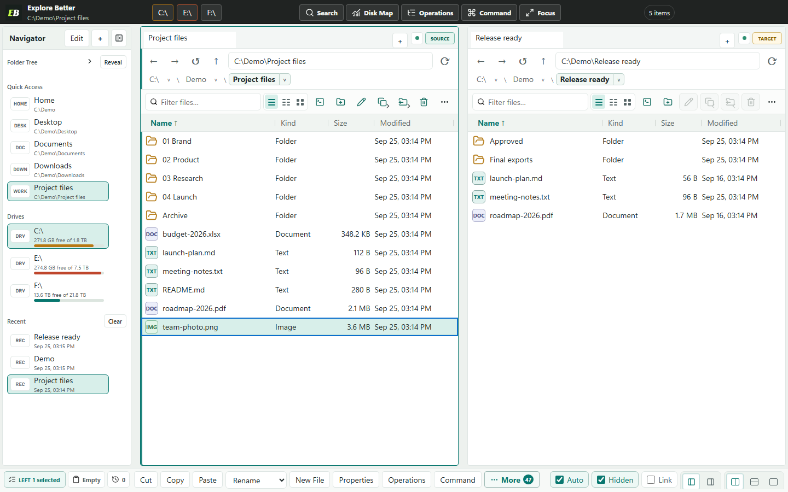
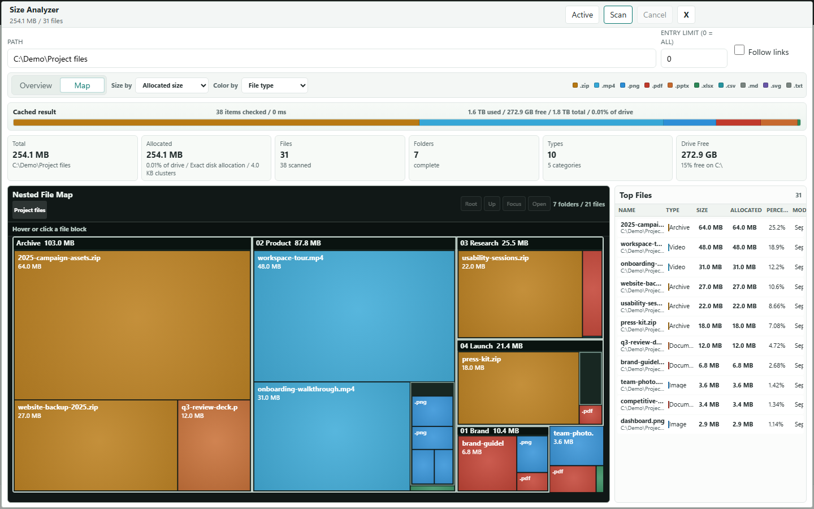
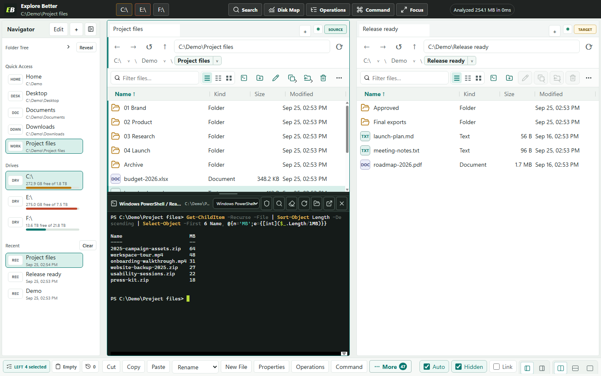
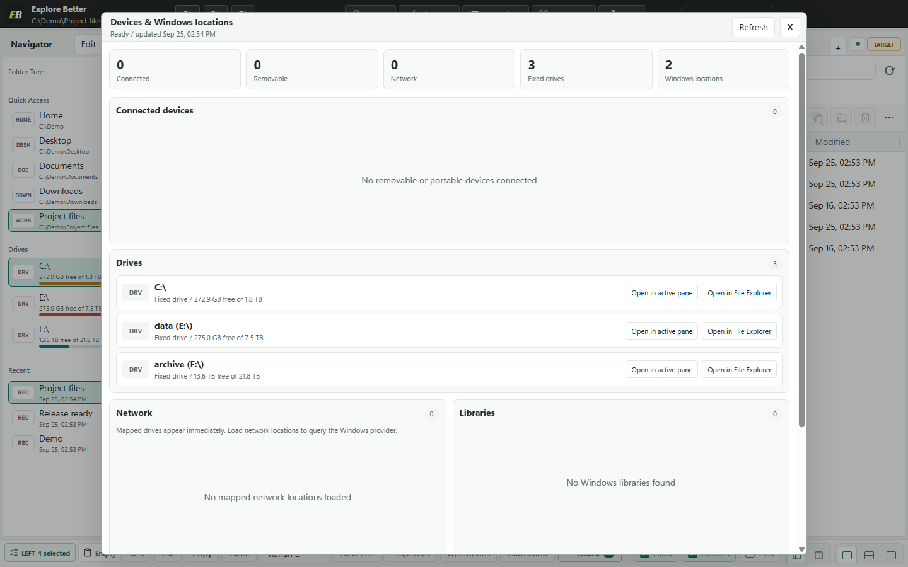
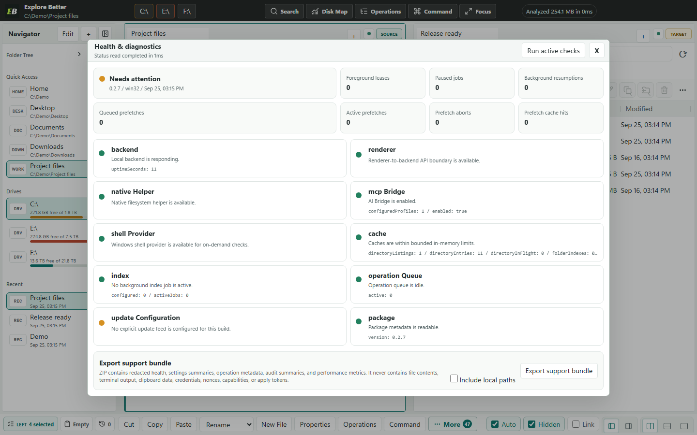

01 / Navigate
Two panes. One decision.
Keep source and destination visible, with independent tabs, filters, history, selection, and layouts.

Windows 11 / Local-first / Read-only by default
Browse, search, analyze, and move files at speed—then let Codex safely operate the exact pane and folder already open.
No pasted paths. No screen scraping. No guessing whether an action actually worked.
One Windows workspace / Files + terminal + AI
Search across drives, expose wasted space, preview file moves, open a real terminal, and give Codex the exact working folder—without rebuilding context.
Your files stay localA better file manager before the AI even arrives
Replace the pile of Explorer windows, path rebuilding, separate disk tools, and blind file operations with one inspectable workspace.
Keep source and destination visible, with independent tabs, filters, history, selection, and layouts.
Move from total volume usage to the exact file with logical and allocated bytes kept distinct.

Preview conflicts, stage work safely, recover after interruption, and keep undo evidence.
Every file tab can own a persistent ConPTY terminal. Open it when needed; stop rebuilding paths by hand.

Explore Better v0.2.4 / safe shared control
Stable semantic actions replace brittle screen coordinates. Every action is validated, permissioned, correlated to the visible result, and observable without polling.
AI clients discover named actions with input schemas, disabled reasons, stale-context protection, expected outcomes, and no selector or script escape hatch.
Connected devices, drives, Libraries, and Windows locations show only capabilities they actually support—with explicit in-app and File Explorer labels.

Ten bounded component checks, foreground scheduler metrics, and a privacy-safe support bundle make failures understandable without uploading your files.

Queue, phase changes, progress, pause, cancellation, retry, Undo, failure, completion, and crash recovery form one bounded chronological timeline.
Prefetch and indexing pause for navigation, search, analysis, operations, and hidden windows—then resume without duplicating cached work.
One workspace / two operators
Explore Better turns the visible pane, tabs, selection, and authorized roots into structured local context and bounded actions. Your AI can find, inspect, compare, navigate, and reveal results without screen scraping or a general-purpose shell.
Find the launch README in the folder I have open and show it here.
Measured on the same Windows fixture
The app does not make the model think faster. It makes the file work around the model immediate, structured, and bounded.
1.5 ms through the running host versus 222.4 ms for a fresh PowerShell baseline.
46.5 ms to group content duplicates versus 247.6 ms for the comparison pipeline.
51.4 ms through the Analyzer path versus 239.9 ms for the comparison script.
Median of three current acceptance runs while keeping rendering bounded to 47 rows.
Measured across 100 warm calls to the local sidecar and running application.
All 43 controlled views opened, rendered, published state, and closed with no page or console errors.
Local should still mean controlled
The AI Bridge exposes file-manager tools, not arbitrary command execution or terminal control.
Authorize only the roots a client needs, then revoke that profile without disturbing the others.
Write access requires a current plan and one-use token before it reaches the recoverable operation queue.
Download / verify / run
Explore Better is a free, open-source public preview distributed through GitHub. The installer hash is published, normal use needs no administrator access, and Windows Explorer remains available.
Windows x64 / 107.7 MiB / Per-user installer / GitHub Release
Get-FileHash .\ExploreBetter-0.2.4-x64-setup.exe -Algorithm SHA256
dc9e0f4f4b22c90cdc4d727a521d74e9c002dac1ae472c3135be2f3ace0d465a
Windows may open a “Windows protected your PC” dialog naming this installer and listing the publisher as unknown. Confirm the filename and SHA-256 above before deciding whether to use More info and Run anyway. Never disable SmartScreen globally.